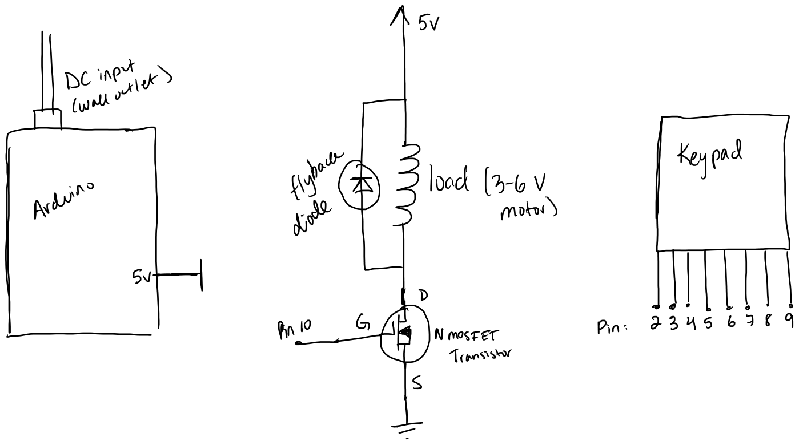

Anna's Assignment 5, : High(er) Voltage!

For this assignment, I had to use a input device with a library and a high load output device to create something! I used a keypad and a DC motor to create a fan powered by the keypad.
Schematic

Shown on the schematic are 11 pins on the arduino. These pins are 5V, 2,3,4,5,6,7 8, 9,10 and ground. The arduino is connected to external power. Also showin is the Keypad. Pin 5V is an outputing pin and is connected to the motor and flyback diode in parallel, then a transistor that is connected to pin 10 and ground. Pins 2-9 are connected to the keypad.
AnalogWrite(pin, 0) is about equivalent to 0V in the gate. AnalogWrite(pin, 63) is about equivalent to 1.25V in the gate. AnalogWrite(pin, 127) is about equivalent to 2.5V in the gate. AnalogWrite(pin, 191) is about equivalent to 3.75V in the gate. AnalogWrite(pin, 255) is about equivalent to 5V in the gate. According to the table in lecture notes 8, at maximum efficiency for either modelof 260 motor running up to 4.5V, the current is at maxiumum .63 A. This is far below 32A maximum drain current for the transistor. At a stall, the current is at maximum 2.62, which is also far below the maximum current of the transistor. So at 5V, these currents should not exceed 32A.
Code Snippet
NOTE: I have been trying to figure out how to get the library to present correctly for a bit now and am not sure how to do so in the code snippet. It kind of shows correctly in inspect element (seen as an HTML tag). At the very top, there is an:
#include (carat) Keypad.h (carat)
#include // sets up the keypad library to be used in the sketch.
//parts of this code are borrowed and altered from a tutorial, called
// "how to set up a keypad on an arduino"
//link: https://www.circuitbasics.com/how-to-set-up-a-keypad-on-an-arduino/
// specifically, the set up code for the keypad: the arrays and constants.
const byte ROWS = 4; // assigns a constant value to represent the number of rows in the keypad
const byte COLS = 4; // assigns a constant value to represent the number of columns in the keypad
int tGate = 10; // variable representing the pin that corresponds to the gate on the transistor
int delaytime = 0; // variable representing the ammount of delay in ms
char currentlet; // variable representing the most recent valid letter pressed on the keypad
char currentval; // variable representing the most recent valid number pressed on the keypad
char currentKey; // variable representing the most recent key pressed on the keypad
char hexaKeys[ROWS][COLS] = { //array of arrays made up of the rows and columns indicated from constants ROWS and COLS
{'1', '2', '3', 'A'}, // each array corresponds to the keys on a row of the keypad
{'4', '5', '6', 'B'}, // there is an array for each row of the keypad, and the num of items in each array corresponds to the num of columns.
{'7', '8', '9', 'C'},
{'*', '0', '#', 'D'}
};
byte rowPins[ROWS] = {9, 8, 7, 6}; // assigns pins on the arduino to indicate which row a key pressed was in
byte colPins[COLS] = {5, 4, 3, 2}; // assigns pins on the arduino to indicate which column a key pressed was in
Keypad customKeypad = Keypad(makeKeymap(hexaKeys), rowPins, colPins, ROWS, COLS); //creates an instance of the keypad variable
//using the variables and arrays that correspond to the pins assigned and number of keys
void setup(){
// method that sets up the arduino, ran once.
Serial.begin(9600); //initializes serial monitor
pinMode (2, INPUT); //initializes pin 2 to be an input pin
pinMode (3, INPUT); //initializes pin 3 to be an input pin
pinMode (4, INPUT); //initializes pin 4 to be an input pin
pinMode (5, INPUT); //initializes pin 5 to be an input pin
pinMode (6, INPUT); //initializes pin 6 to be an input pin
pinMode (7, INPUT); //initializes pin 7 to be an input pin
pinMode (8, INPUT); //initializes pin 8 to be an input pin
pinMode (9, INPUT); //initializes pin 9 to be an input pin
pinMode (10, OUTPUT); //initializes pin 10 to be an output pin
}
void loop(){
// method that runs main code continously repeating.
char customKey = customKeypad.getKey(); //checks if a key on the keypad is pressed and assigns that key to the variable customkey
if (customKey){ //if a key on the keypad is pressed
//Serial.println(customKey);
currentKey = customKey; //set currentKey to the value of customKey
//Serial.println("current key =");
//Serial.println(currentKey);
if (currentKey == 'A' || currentKey == 'B' || currentKey == 'C'){ // if the key pressed was A, B, or C
currentlet = currentKey; //set currentlet to the value of currentKey
//Serial.println("current let =");
//Serial.println(currentlet);
} else if (currentKey == '1' ||currentKey == '2' || currentKey == '3' || currentKey == '4'|| currentKey == '0'){ //if the key pressed was 1, 2, 3, 4, or 0
currentval = currentKey; //set currentval to the value of currentKey
//Serial.println("current val =");
//Serial.println(currentval);
}
}
// commented out lines of code above are for debugging purposes, they print the current value of variables to serial.
if (currentlet == 'A'){ //if the letter pressed most recently was A
delaytime = 0; //set delaytime to 0ms
} else if (currentlet == 'B') { //if the letter pressed most recently was B
delaytime = 250 ; //set delaytime to 250ms
} else if (currentlet == 'C') { //if the letter pressed most recently was C
delaytime = 500; //set delaytime to 500ms
}
if (currentval == '0'){ //if the number key pressed most recently was 0
analogWrite (tGate, 0); // set voltage coming out of the tGate pin to 0
} else if (currentval == '1'){ //if the number key pressed most recently was 1
analogWrite(tGate, 63); // set voltage coming out of the tGate pin to 1/4 of max
if (delaytime |= 0){ // if delaytime is not 0
delay(delaytime); // delay by delaytime
analogWrite(tGate, 0); //set voltage coming out of tGate pin to 0
delay(delaytime); //delay by delaytime
}
} else if (currentval == '2'){ //if the number key pressed most recently was 2
analogWrite(tGate, 127); // set voltage coming out of the tGate pin to 1/2 of max
if (delaytime |= 0){ // if delaytime is not 0
delay(delaytime); // delay by delaytime
analogWrite(tGate, 0); //set voltage coming out of tGate pin to 0
delay(delaytime); //delay by delaytime
}
} else if (currentval == '3'){ //if the number key pressed most recently was 3
analogWrite(tGate, 191); // set voltage coming out of the tGate pin to 3/4 of max
if (delaytime |= 0){ // if delaytime is not 0
delay(delaytime); // delay by delaytime
analogWrite(tGate, 0); //set voltage coming out of tGate pin to 0
delay(delaytime); //delay by delaytime
}
} else if (currentval == '4'){ //if the number key pressed most recently was 4
analogWrite(tGate, 255); // set voltage coming out of the tGate pin to max
if (delaytime |= 0){ // if delaytime is not 0
delay(delaytime); // delay by delaytime
analogWrite(tGate, 0); //set voltage coming out of tGate pin to 0
delay(delaytime); //delay by delaytime
}
}
My code includes a setup method which runs once and prepares the pins on the Arduino for use by designating them as outputs/inputs, and begins the serial monitor.
Before the setup method, 10 variables are initialized. This includes:
two constants: ROWS and COLs,
two ints: tGate and delaytime,
three chars currentlet, currentval, and currentKey,
a char array of char arrays: hexaKeys,
and two arrays: rowPins and colPins.
The keypad instance is initialized as customKeypad. The keypad library is also setup using #include at the very start.
The loop method starts with checking if a key was pressed, and if it was it will assign either the currentlet or currentval to that key depending on what was pressed. If it was a valid number (0,1,2,3,4), it will be assigned to curent val. if it was a valid letter (A,B,C), it will be assigned to currentlet.
Then depending on the current states of currentlet and currentval, the motor will be turned on to a certain power and will fluctuate with a certain frequency. A, B, and C corresponds to the different amount of ms that the fan will turn on and off for on a loop, and 0,1,2,3, and 4 insicate the speed of the motor.
Portions of my code were borrowed and altered from a tutorial on how to set up a keypad for the arduino.
Circuit Image and Operation GIF


The first image shows the circuit from above. The 1st, gif shows the behavior of the motor at different speeds. The 2nd gif shows the different fluctuations on on and off. Some of these images show a battery, but my battery started malfunctioning so I switched to using a wall plug in.
In this circuit there are 11 wires connected to the Arduino. One is connected each to pins 2,3,4,5,6,7,8,9,10 5V, and ground. There is also an external power source connected to the arduino.
The keypad is connected to the wires that are connected to pins 2,3,4,5,6,7,8, and 9.